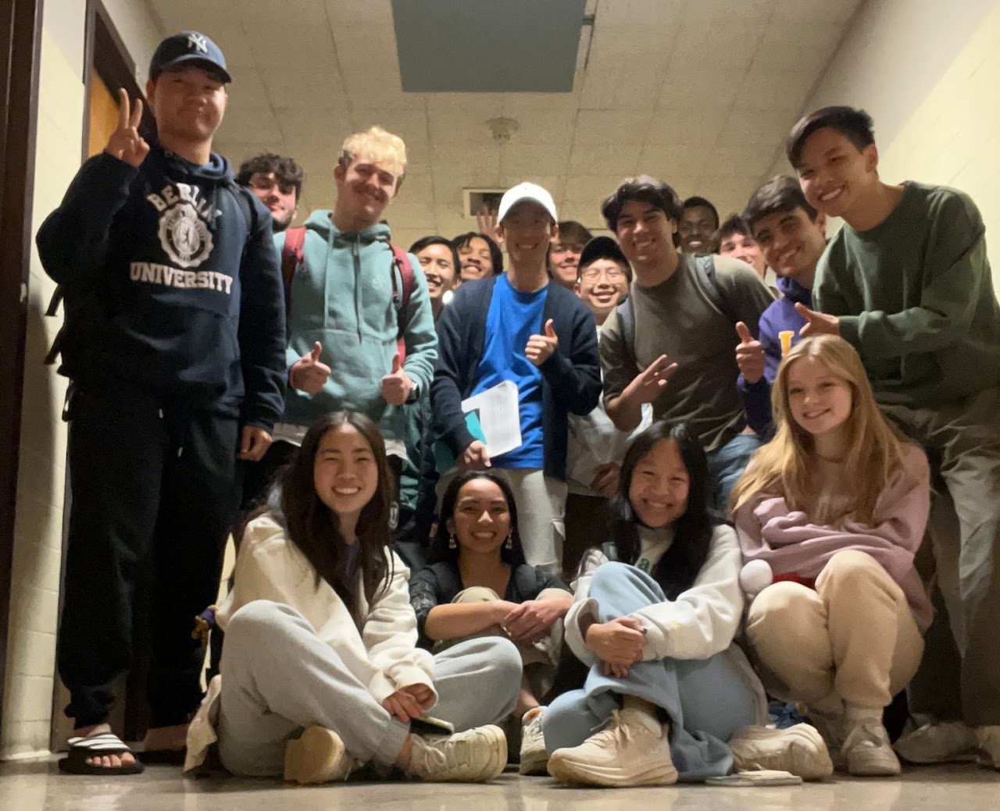

Department of Mathematics, Applied Mathematics, and Statistics
Case Western Reserve University
I am a Visiting Assistant Professor at Case Western Reserve University. My research lies at the intersection of inverse problems, partial differential equations, spectral theory, and materials science. I develop analytical and computational methods to recover shapes and material properties from boundary measurements, study boundary integral operators, and design neutral inclusions. My current work also connects geometric and spectral methods with operator learning.
I received my Ph.D. in Mathematical Sciences from KAIST in 2022, advised by Mikyoung Lim. Before joining CWRU in 2025, I was a postdoctoral researcher at Louisiana State University.
Recent updates
| Sep. 2026 | Our preprint Faber–Walsh field expansions for the planar conductivity problem with multiple inclusions is available on arXiv. |
| Fall 2026 | I am teaching MATH 223, Calculus for Science and Engineering III, and MATH 307, Linear Algebra, at CWRU. |
| Spring 2026 | I supervised an undergraduate capstone project on conformal welding via neural operators for 2D shape analysis. |
Experience
Appointments
Case Western Reserve University
Visiting Assistant Professor
Cleveland, OH
Louisiana State University
Postdoctoral Researcher
Baton Rouge, LA
Education
Korea Advanced Institute of Science and Technology (KAIST)
Ph.D. in Mathematical Sciences
Advisor: Mikyoung Lim
Thesis: Analytical shape recovery and neutral inclusion based on geometric function theory
KAIST
B.S. in Mathematical Sciences
Cum laude, Honor Student
Academic visits
DePaul University
Short-term Visitor
Host: Wei Li
Yonsei University
Short-term Visitor
Host: Eunjung Lee
ETH Zürich
Academic Guest
Host: Habib Ammari
TU München
Undergraduate Exchange Student
Awards & scholarships
- Outstanding Teaching Assistant Award — KAIST (2017, 2018, 2020)
- National Scholarship (graduate type) — Korea Student Aid Foundation (2015–2020)
- Young-Han Kim Global Leader Scholarship — KAIST (2019)
- Award of Excellence in Programming Contest, KSIAM-Mathworks Problem Challenge 2018 — Korean Society for Industrial and Applied Mathematics (KSIAM) (2018)
- Best Poster Award, KSIAM 2018 Spring Conference — KSIAM (2018)
- National Scholarship (undergraduate type) — Korea Student Aid Foundation (2011–2015)
- Bronze Awards in University Students Contest of Mathematics — Korean Mathematical Society (2012, 2013, 2014)
Research
Research interests
- Inverse problems
- Partial differential equations
- Spectral theory
- Materials science
- Wave scattering
- Operator learning
Browse publications by topic
Conductivity and inverse problems
- Faber-Walsh field expansions for the planar conductivity problem with multiple inclusions
- Inverse problem for a planar conductivity inclusion
- Analytical shape recovery of a conductivity inclusion based on Faber polynomials
- A mathematical and numerical framework for near-field optics
- Corner effects on the perturbation of an electric potential
Elastic media
- Analytic asymptotic formulas for effective parameters of planar elastic composites
- A matrix formulation of the plane elastostatic inclusion problem via geometric function theory
Neutral inclusions and composite materials
- Construction of inclusions with vanishing generalized polarization tensors by imperfect interfaces
- Geometric multipole expansion and its application to semi-neutral inclusions of general shape
- An extension of the Eshelby conjecture to domains of general shape in anti-plane elasticity
Neumann–Poincaré spectral theory
- Matrix representation of the Neumann–Poincaré operator for a torus
- Spectral analysis of the Neumann–Poincaré operator for thin doubly connected domains
Interdisciplinary work
Preprints
- Faber-Walsh field expansions for the planar conductivity problem with multiple inclusionsarXiv:2609.29239 · Preprint
- Matrix representation of the Neumann–Poincaré operator for a torusarXiv:2410.20033 · Preprint
- Analytic asymptotic formulas for effective parameters of planar elastic compositesarXiv:2403.15714 · Preprint
- A matrix formulation of the plane elastostatic inclusion problem via geometric function theoryarXiv:2403.15713 · Preprint
Journal articles
- Spectral analysis of the Neumann–Poincaré operator for thin doubly connected domainsSIAM Journal on Mathematical Analysis, 57(3), 2210–2228 (2025).
- Construction of inclusions with vanishing generalized polarization tensors by imperfect interfacesStudies in Applied Mathematics, 152(2), 673–695 (2024).
- Inverse problem for a planar conductivity inclusionSIAM Journal on Imaging Sciences, 16(2), 969–995 (2023).
- Silver Nanoparticles Induced with Aqueous Black Carpenter Ant Extract Selectively Inhibit the Growth of Pseudomonas AeruginosaBiotechnology Letters, 45, 811–821 (2023).
- Geometric multipole expansion and its application to semi-neutral inclusions of general shapeZeitschrift für angewandte Mathematik und Physik, 74, Article 39 (2023).
- An extension of the Eshelby conjecture to domains of general shape in anti-plane elasticityJournal of Mathematical Analysis and Applications, 495(2), 124756 (2021).
- Analytical shape recovery of a conductivity inclusion based on Faber polynomialsMathematische Annalen, 381, 1837–1867 (2021).
- A mathematical and numerical framework for near-field opticsProceedings of the Royal Society A, 474, 20180150 (2018).
- Corner effects on the perturbation of an electric potentialSIAM Journal on Applied Mathematics, 78(3), 1577–1601 (2018).
Presentations
Seminars
- Computational & Uncertainty Analysis SeminarFeb. 2026Case Western Reserve University · Cleveland, OH
- Northwestern Analysis SeminarNov. 2024Northwestern University · Evanston, IL
- Chemistry & Physics SeminarAug. 2023Southeastern Louisiana University · Hammond, LAMathematical modeling of neutral inclusions and inverse problems
- Applied Analysis SeminarOct. 2022Louisiana State University · Baton Rouge, LAInverse problem in potential theory using Faber polynomials
- KAIST Math Graduate Student SeminarApr. 2022KAIST · Daejeon, Republic of Korea
Conferences & workshops
- Joint Mathematics MeetingsJan. 2025Seattle Convention Center · Seattle, WASpectral Analysis of the Neumann-Poincaré operator for nearly touching tori
- The 2nd International AMS-UMI Joint MeetingJul. 2024Università degli Studi di Palermo · Palermo, Italy (Online)Shape reconstruction for a planar conductivity inclusion
- Applied Inverse Problems ConferenceSep. 2023Georg-August-Universität Göttingen · Göttingen, GermanyConstruction of inclusions with vanishing generalized polarization tensors by imperfect interfaces
- AMS Spring Southeastern Sectional MeetingMar. 2023Georgia Institute of Technology · Atlanta, GASpectrum of the Neumann–Poincaré Operator for doubly connected thin planar domains
- KSIAM Spring ConferenceMay 2022Institute for Basic Science · Daejeon, Republic of KoreaAn extension of the Eshelby conjecture to general shaped domains
- KSIAM Spring ConferenceJun. 2021Gangneung TopsTen Hotel · Gangneung, Republic of KoreaAnalytic shape reconstruction of a conductivity inclusion by using Faber polynomials
- Applied Inverse Problems ConferenceJul. 2019Université Grenoble Alpes · Grenoble, FranceConstruction of multi-coated neutral inclusion of general shaped inclusion
- The 5th East Asia Section of IPIA Young Scholars SymposiumJul. 2019Chinese Academy of Sciences · Beijing, ChinaReconstruction of a locally perturbed planar surface using plasmonic sensing
- KSIAM Annual MeetingNov. 2018Jeju Ramada Plaza Hotel · Jeju, Republic of KoreaConstruction of multilayered neutral inclusion of general shape
- The 9th International Conference on Inverse Problems and Related TopicsAug. 2018National University of Singapore · SingaporeNew geometric factors of the planar inclusion
- KSIAM Spring ConferenceMay 2018KAIST · Daejeon, Republic of KoreaReconstruction of perturbations on a planar surface by using plasmonic resonances
- KSIAM Spring ConferenceJun. 2017Seoul National University · Seoul, Republic of KoreaDetection of corners on a insulated inclusion by using generalized polarization tensors
Teaching
I teach calculus, differential equations, and linear algebra, connecting rigorous mathematical ideas with applications.
Case Western Reserve University
Instructor · Aug. 2025 – Present
| MATH 223 Calculus for Science and Engineering III | Fall 2026 |
| MATH 307 Linear Algebra | Spring 2026, Fall 2026 |
| MATH 228 Differential Equations | Spring 2026 |
| MATH 227 Calculus III | Fall 2025 |
Louisiana State University
Instructor · Jan. 2023 – Jul. 2025
| MATH 1540 Integral Calculus | Summer 2025 (online) |
| MATH 1550 Calculus I | Spring 2024, Spring 2025 |
| MATH 1553 Honors: Analytic Geometry and Calculus II | Spring 2023, Fall 2023 |
KAIST
Teaching Assistant · Mar. 2016 – Jun. 2021
| CC511 Probability and Statistics | Spring 2021 |
| MAS101 Calculus I | Spring 2016, Spring 2017, Spring 2020 |
| MAS102 Calculus II | Spring 2019, Fall 2019, Fall 2020 (in English) |
| MAS109 Introduction to Linear Algebra | Fall 2016 |
| MAS201 Differential Equations and Applications | Spring 2017, Spring 2018 |
| MAS202 Applied Mathematical Analysis | Fall 2018 |
| MAS241 Analysis I | Spring 2016 |
| MAS242 Analysis II | Fall 2016, Fall 2018 |
| MAS341 Complex Variables | Spring 2020 |
| MAS441 Lebesgue Integral Theory | Fall 2019 (in English) |
| MAS541 Complex Function Theory | Fall 2017 |
| MAS645 Theory of Partial Differential Equations | Spring 2019 |
Student supervision
MATH 352 · Mathematics Capstone
Andrew S. Cho, Case Western Reserve University, Spring 2026.
Conformal Welding via Neural Operators for 2D Shape Analysis.
Earlier teaching & mentoring
- Instructor, Mentoring Academy, Daejeon (July 2013–February 2014).
- Undergraduate assistant for MAS101 Calculus I, KAIST (Spring 2015).
- Counseling assistant, Department of Mathematical Sciences, KAIST (August–December 2015).
- Undergraduate mentoring, KAIST (September 2015–June 2017).

Service
Referee service
SIAM Journal on Mathematical Analysis (2026).
Conference service
- Special session organizer, Joint Mathematics Meetings, Seattle (January 2025).
- Session chair, Applied Inverse Problems Conference, Göttingen (September 2023).
Professional membership
American Mathematical Society, introductory membership (December 2023–December 2025).
Links
Societies & institutions
Research community
- Anuj Abhishek, Case Western Reserve University
- Habib Ammari, ETH Zurich
- Johan Helsing, Lund University
- Sangwoo Kang, Pusan National University (부산대학교)
- Hyundae Lee, Inha University (인하대학교)
- Mikyoung Lim, KAIST (한국과학기술원)
- Robert P. Lipton, Louisiana State University
- Stephen P. Shipman, Louisiana State University
- Erkki Somersalo, Case Western Reserve University
- Sanghyeon Yu, Korea University (고려대학교)